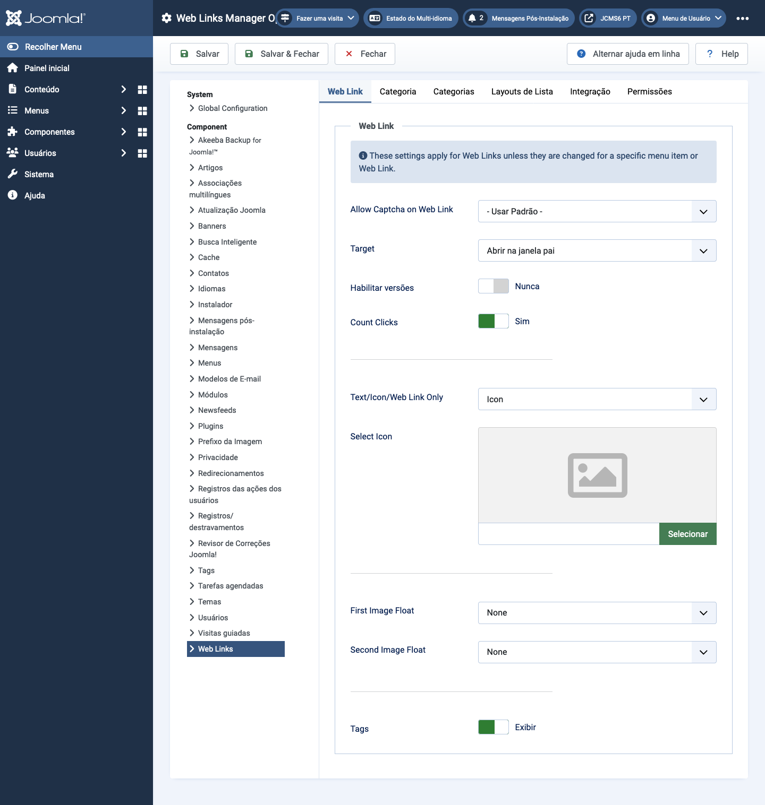

Joomla Help Screens
Opções de Links da Web
Descrição
A configuração de Opções de Links da Web permite definir parâmetros utilizados globalmente para todos os itens de menu de link da web.
Elementos Comuns
Alguns elementos desta página são abordados em artigos de ajuda separados:
Como Acessar
- Selecione Componentes -> Weblinks -> Links no menu do Administrador. Então...
- Selecione o botão da Barra de Ferramentas Opções.
Captura de Tela

Aba de Link da Web
- Permitir Captcha no Link da Web Selecione o plugin de captcha que será usado no formulário de envio de link da web. Pode ser necessário inserir informações obrigatórias para o seu plugin de captcha no Gerenciador de Plugins. Se 'Usar Padrão' for selecionado, certifique-se de que um plugin de captcha esteja selecionado na Configuração Global.
- Alvo Janela do navegador de destino quando o link for selecionado.
- Contar Cliques Se Sim, o número de vezes que o link foi clicado será registrado.
- Texto/Ícone/Somente Link da Web Mostra um texto, ícone ou nada com o Link da Web. O padrão é Ícone.
- Selecionar Ícone Isso permite que você selecione um arquivo de imagem para usar como ícone padrão para links da web. Quando você clica no botão Selecionar, uma janela modal se abre, permitindo que você navegue pelos arquivos de imagem em seu site.
- Flutuação da Imagem Onde exibir a imagem na página.
- Mostrar Tags Mostrar ou ocultar as tags do feed.
Aba de Categoria
As Opções de Categoria controlam como os links da web serão exibidos quando você explorar uma categoria de links da web para visualizar seus links.
- Escolher um Layout Selecione o layout padrão para exibir quando você clicar em um link de Categoria. Se você criar um layout alternativo para uma categoria, poderá selecioná-lo como o padrão.
- Título da Categoria Mostrar ou ocultar o título da categoria.
- Descrição da Categoria Mostrar ou ocultar a descrição da categoria.
- Imagem da Categoria Mostrar ou ocultar a imagem da categoria.
- Níveis de Subcategorias Quantos níveis de subcategorias exibir ao mostrar uma vista de categoria.
- Categorias Vazias Mostrar ou ocultar categorias que não contêm nenhum item ou subcategorias.
- Descrições das Subcategorias Mostrar ou ocultar as descrições das subcategorias exibidas.
- # Links da Web Mostrar ou ocultar o número de links da web em cada categoria.
- Mostrar Tags Mostrar ou ocultar as tags para uma única categoria.
Aba de Categorias
Essas configurações se aplicam às Opções de Categorias de Links da Web, a menos que sejam alteradas para um item de menu específico.
- Descrição do Nível Superior da Categoria Mostrar ou ocultar a descrição da categoria de nível superior.
- Níveis de Subcategorias Quantos níveis na hierarquia exibir.
- Categorias Vazias Mostrar ou ocultar categorias que não contêm itens e subcategorias.
- Descrições das Subcategorias Mostrar ou ocultar a descrição de cada subcategoria.
- # Links da Web Mostrar ou ocultar o número de links da web em cada categoria.
Aba de Layouts de Lista
Essas configurações se aplicam às Opções de Lista de Links da Web, a menos que sejam alteradas para um item de menu específico.
- Campo de Filtro O Campo de Filtro cria um campo de texto onde um usuário pode inserir um valor
para ser usado como filtro para os links da web exibidos na lista.
- Ocultar: Não mostrar um campo de filtro.
- Título: Filtrar pelo título do link da web.
- Autor: Filtrar pelo nome do autor.
- Acessos: Filtrar pelo número de acessos aos links da web.
- Exibir Seleção Mostrar ou ocultar o controle Exibir # que permite ao usuário selecionar o número de itens a serem exibidos na lista.
- Cabeçalhos da Tabela Mostrar ou ocultar um cabeçalho acima da tabela de links da web.
- Descrição dos Links Mostrar ou ocultar a descrição do link da web.
- Acessos Ocultar ou mostrar o número de vezes que esse link da web foi acessado.
Aba de Integração
Essas configurações determinam como o Componente de Links da Web irá se integrar com outras extensões.
- Link de Feed RSS Mostrar ou ocultar as URLs dos links de feed. Um link de feed será exibido como um ícone de feed na barra de endereço da maioria dos navegadores.
- Remover IDs das URLs Sim ou Não.
- Editar Campos Personalizados Sim ou Não.
Dicas
- Se você é um usuário iniciante, pode simplesmente manter os valores padrão aqui até aprender mais sobre o uso de opções globais.
- Se você é um usuário avançado, pode economizar tempo criando bons valores padrão aqui. Quando configurar itens de menu e criar links da web, poderá aceitar os valores padrão para a maioria das opções.
- Todos os valores definidos aqui podem ser substituídos no nível do item de menu, categoria ou link da web.
Traduzido por openai.com